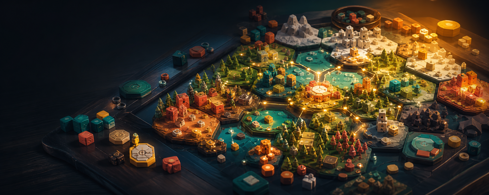

Plan fast
Turns should feel snappy, visual, and easy to understand.

Community alpha opening soon
Mobaco is a playful strategy game about modular worlds, surprising choices, and the kind of community feedback that can change the game before release.
Every session starts with fresh pieces, shifting paths, and new tactical problems.
Simple turns, visible consequences, and enough room for clever plans.
Alpha feedback will guide balance, usability, features, and release priorities.
What is Mobaco?
Mobaco is designed for players who like smart decisions without needing a manual the size of a small castle. Build routes, claim opportunities, respond to opponents, and adapt when the board starts telling a different story.
Turns should feel snappy, visual, and easy to understand.
The best move changes as the world and other players evolve.
Tiles, resources, and timing create little moments of genius.
Competition, discovery, and feedback without the pressure wall.
Alpha test
Alpha testers will get early builds, direct feedback moments, and a real chance to influence what becomes clearer, stronger, and more fun.
Send a short message so we know you want to test Mobaco.
Hop into the Discord or mailing list once the links are ready.
Try new versions, report friction, and tell us what felt brilliant.
Your feedback helps decide what gets polished, changed, or added.
Community first
The Mobaco alpha is for curious players, strategy fans, board-game minds, and people who enjoy watching a game grow from rough gem to polished release.
Get involvedFAQ
The public date is not announced yet. This page is ready to collect interest before the first wave opens.
No. Mobaco needs both experienced strategy players and fresh eyes who can spot confusing moments.
Most likely Discord, with email updates for people who prefer slower updates.
That depends on the alpha wave. Add a clear note here once the sharing rules are final.
Ready to play early?
Be part of the first group testing mechanics, balance, onboarding, and the community direction of the game.
Request alpha access